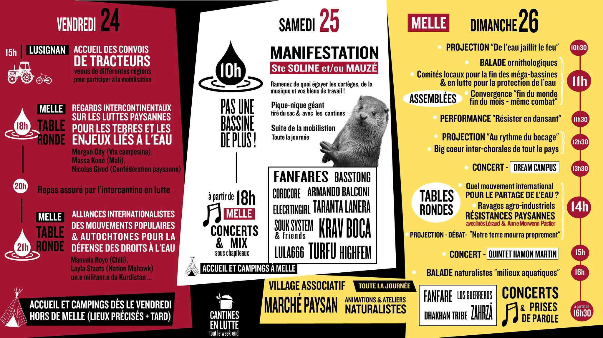

Publication d’archives
Malgré les honteuses manœuvres d'intimidation et l'arbitraire de la dernière sanction judiciaire infligée à…
Date indiquée par Facebook · 24 mars 2023
Texte conservé avec la publication
Contexte du dossier
Les deux annonces du 9 mars présentent l’eau comme un bien commun et convoquent pour le 10, rue des Fossés à Niort, un débat fédéral avec Bassines Non Merci et la Confédération paysanne. Le 24, la fédération maintient son soutien à la mobilisation internationale « Pas une bassine de plus » du week-end des 24–26 mars, malgré les mesures judiciaires qu’elle dénonce contre un animateur du mouvement. Avec les communistes de la Vienne, elle annonce un stand au village militant de Melle le dimanche 26. L’enjeu formulé n’est pas seulement une opposition à un équipement : il s’agit de discuter la destination de la ressource, les usages agricoles et le droit de participer aux choix.

Sources
Archive rouge · export Facebook · AR-0002-FB-01711
À lire aussi · La question cruciale du revenu paysan .